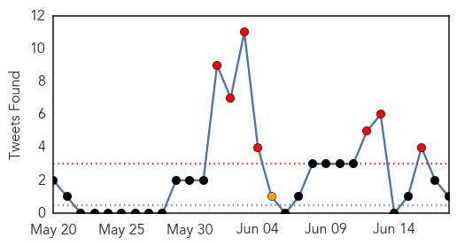
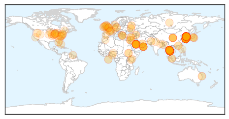

MERS
30-Day Web Trend
28 alerts, 0 warnings

30-Day Twitter Trend
18 alerts, 2 warnings

Article Locations

Article Confidences

Top Articles:
- 1.000
- 'Monitor passengers at airport to stop MERS entry into India'
- 1.000
- Medical experts: Prevent MERS entry in India, monitor passengers
- 1.000
- 'Monitor passengers at airport to stop MERS entry into India'
- 1.000
- Vigilance against acute respiratory infections
- 1.000
- 'Monitor passengers at airport to stop MERS entry into India'
- 1.000
- MERS: Thailand confirms first case of deadly virus in 75yo businessman
- 1.000
- what is the MERS outbreak in South Korea?
- 1.000
- S. Korea's MERS toll rises to 23 with three more deaths
- 1.000
- Vietnam sets up hot lines for MERS
- 1.000
- Vietnam sets up hot lines for MERS
- 1.000
- The MERS outbreak: an Asian perspective
- 0.999
- Thailand confirms first MERS case
- 0.999
- Thailand confirms first MERS case: health ministry
- 0.999
- Thailand confirms first Mers case
- 0.999
- MERS Research Outpaced by Outbreaks
- 0.999
- Public health experts outline strategies for managing MERS-CoV outbreak
- 0.999
- MERS coronavirus a bigger threat to Australia than Ebola, experts say
- 0.999
- Thailand reports first MERS case; South Korea adds 3
- 0.999
- Thailand confirms first MERS case
- 0.999
- MERS outbreak in Republic of Korea is ‘wake-up call’ for world: WHO
- 0.999
- 3 more people die from Coronavirus in South Korea
- 0.998
- Thailand confirms first Mers case as virus spreads in Asia
- 0.998
- WHO calls MERS outbreak a ‘wakeup call’
- 0.998
- Thailand confirms first MERS case: Health Ministry
- 0.998
- WHO concerned about MERS amid prevailing transmission uncertainties
- 0.998
- MERS outbreak in Korea not considered a public health emergency as death toll increases
- 0.997
- Thailand Confirms First MERS Case
- 0.997
- South Korea Death Toll Rises To 23, 3 New Cases Diagnosed
- 0.997
- Thailand Confirms First MERS Case
- 0.997
- MERS: Thailand confirms first case
- 0.997
- S.Korea reports 3 more MERS deaths, 3 infections - Xinhua
- 0.997
- Thailand confirms first MERS case after latest outbreak in South Korea
- 0.996
- Worried about MERS in South Korea? Visitors can (mostly) breathe easy.
- 0.996
- WHO reaffirms no ...｜Society｜WCT
- 0.996
- WHO: No evidence of MERS-CoV community spread in S.Korea
- 0.996
- Deadly respiratory virus MERS just spread to Thailand
- 0.996
- MERS Virus Migrates to One More Country. What Will Contain It? – Phenomena
- 0.995
- MERS reaches Thailand, says local media
- 0.995
- Moody's says MERS poses risk to South Korean economy, signs outbreak slowing
- 0.995
- Moody’s says MERS credit negative amid signs outbreak slowing
- 0.995
- Moody's says MERS poses risk to S.Korean economy, signs outbreak slowing
- 0.995
- WHO says MERS outbreak in S.Korea a `wakeup call`
- 0.995
- MERS poses risk to South Korean economy, warns Moody’s
- 0.995
- Health Ministry calls for continuous MERS-CoV efforts
- 0.994
- Moody's says MERS poses risk to South Korean economy, signs outbreak slowing
- 0.990
- Lack of a MERS vaccine frustrates scientists
- 0.988
- PM Prayut: 'No MERS patient in Thailand yet'
- 0.972
- South Korean President urges national effort against MERS virus
- 0.959
- MERS death toll reaches 23; WHO says rate of infection slowing
- 0.956
- WHO: Risk of MERS to public is 'considered low'
Showing top 50 articles...
Top Tweets:
- 0.920
- AFD Blog `Korea MERS Outbreak: 165 Cases, 23 Deaths' MERS-CoV http://t.co/yzhalMwzfj
- 0.815
- RT: MERS coronavirus a bigger threat to Australia than Ebola, experts say: An infectious diseases expert has warne... http://…
- 0.527
- RT: The most recent developments in MERS-CoV: first confirmed case in Thailand. South Korea reports a total of 164 cases http://t…
- 0.527
- RT: The most recent developments in MERS-CoV: first confirmed case in Thailand. South Korea reports a total of 164 cases http://t…
- 0.520
- All MERS-CoV cases in S Korea are associated with healthcare facilities; very low infection risk in other settings http://t.co/5E13KNsQcO
Unknown
30-Day Web Trend
12 alerts, 3 warnings

30-Day Twitter Trend
7 alerts, 11 warnings

Article Locations
Article Confidences

Top Articles:
- 1.000
- South Korea Reports 3 More MERS Deaths
- 1.000
- MERS outbreak: WHO chief says efforts in containing deadly virus ‘on very good footing’
- 1.000
- WHO Chief Voices Optimism Over South Korea MERS Outbreak
- 1.000
- South Korea Reports 3 More MERS Deaths
- 1.000
- Thailand confirms first MERS case as virus spreads in Asia
- 1.000
- WHO chief voices optimism over South Korea Mers outbreak, Government & Economy
- 1.000
- WHO chief voices optimism over S. Korea MERS outbreak
- 0.999
- Thailand confirms first case of MERS - Regional
- 0.999
- Thailand confirms first MERS case as virus spreads in Asia – BorneoPost Online
- 0.999
- Thailand confirms first MERS case as virus spreads in Asia
- 0.999
- (LEAD) S. Korea reports 3 more deaths from MERS, 3 new cases
- 0.999
- South Korea's MERS toll touches 23 with three more deaths
- 0.999
- Thailand reports first case of MERS
- 0.999
- Thailand confirms first MERS case as virus spreads in Asia
- 0.999
- South Korea: MERS Death Toll Now At 23
- 0.999
- (2nd LD) S. Korea reports 3 more deaths from MERS, 3 new cases
- 0.999
- (LEAD) S. Korea reports 3 more deaths from MERS, 3 new cases
- 0.999
- WHO chief Margaret Chan voices optimism over South Korea MERS outbreak
- 0.998
- Tourist first MERS case in Thailand
- 0.998
- WHO chief reassures South Korea as its MERS deaths reach 24
- 0.997
- MERS Death Toll Rises To 20 In South Korea
- 0.997
- The Heart of MERS in Seoul
- 0.997
- Thailand confirms first MERS case
- 0.997
- S. Korea reports 3 more deaths from MERS, 3 new cases
- 0.997
- The World On Arirang
- 0.996
- 3 more MERS patients die
- 0.996
- First MERS Case Confirmed in Thailand
- 0.996
- First case of MERS reported in Thailand
- 0.995
- Thailand Confirms Middle East Tourist Tests Positive for MERS
- 0.995
- WHO says MERS in S. Korea isn’t an emergency of international concern
- 0.995
- Thailand confirms its first case of MERS
- 0.994
- Thailand confirms first case of Mers as cost of South Korean patient in China put at 8 million yuan
- 0.993
- MERS lands in Thailand as Korea toll rises
- 0.993
- (MERS Virus) Three more South Koreans die, 165 infected
- 0.993
- Thailand confirms first MERS case as virus spreads in Asia
- 0.993
- South Korea reports three more deaths in MERS outbreak, three new cases
- 0.992
- South Korea’s Mers deaths reach 23
- 0.991
- MERS infections in S.Korea abate on lingering concerns - Xinhua
- 0.990
- Thailand reports first Mers case
- 0.990
- Korean Air hit by MERS outbreak
- 0.990
- South Korea’s MERS Outbreak could affect its Economic Recovery, says Moody’s
- 0.989
- First case confirmed in Thailand as man tests positive for disease
- 0.989
- The World On Arirang
- 0.988
- Thailand Confirms MERS Infection
- 0.986
- Number of MERS cases in South ...｜Society｜WCT
- 0.986
- 'Community transmission for MERS unlikely'
- 0.986
- WHO reassures South Korea over Mers
- 0.985
- Thailand’s first MERS case found in Bangkok
- 0.984
- MERS outbreak in S.Korea a 'wakeup call': WHO
- 0.984
- South Korea's MERS deaths reach 23
Showing top 50 articles...
Top Tweets:
- 0.708
- RT: Head of the World Health Organization reassures South Korea as MERS death toll reaches 23 a month into outbreak http://t.co/NAI4HHj…
- 0.708
- RT: Head of the World Health Organization reassures South Korea as MERS death toll reaches 23 a month into outbreak http://t.co/NAI4HHj…
- 0.682
- RT: 3 more MERS cases in SKorea's outbreak. Death toll is up to 23. For context: 44 people died from SARS in Toronto. htt…
- 0.584
- 3 more MERS cases in SKorea's outbreak. Death toll is up to 23. For context: 44 people died from SARS in Toronto. http://t.co/4e1Ikgvo9L